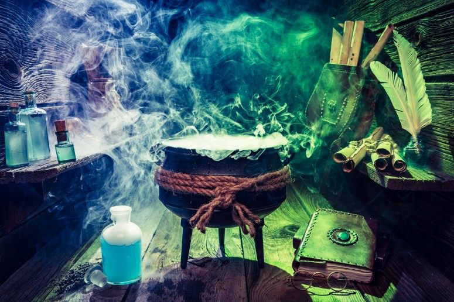

36 Живая и мертвая вода
Экзамен сдан. Вместе мы выполнили тот самый дипломный проект архитектора. Построили мост между мирами. Вместо того, чтобы ждать, когда мы тебя возьмём в мир твоего духа, ты сама построила свою комнату в нашем общем доме, научилась вместе с нами управлять созданием миров. А главное, мы друг друга приняли и полюбили, стали родной семьёй.
В нашем понимании ты стала более "правильной" - мы выправили все твои неправильные установки. Как и обещали - мы заставили тебя поработать. Сначала ты примеряла разные маски и разглаживала свою одежду: надевала маску нечистой силы. Потом отдирала от себя чужие стереотипы - те одежды, которые тебе были не в пору. Созналась себе в том, что тебя мучило и отказалась от фальшивых обвинений. Затем ты готовила нам еду - какую же пищу для размышлений ты нам приподнесла, когда искала выход, пыталась решать нерешаемые задачи. Ну и наконец, ты научилась строить наши сложные фразы, бродила по дремучим лесам в поисках ответов, в которых каждое дерево - фраза нашего языка. Мы не имеем ничего против веры в жизнь, добро, свет, Будду или Иисуса Христа. Но мы против бездумной необоснованной слепой веры в чужие слова или стереотипы, которые вредят здоровью сознания - благополучию нашего мира. В нашем мире мы творим мыслью, наше слово есть дело, поэтому в нем соблюдаются все законы причины и следствия. Если мы исходим из неверных предпосылок - ветки заболевают. Если перепрыгиваем с ветки на ветку и делаем необоснованные выводы - выращиваем ветви из воздуха - то создаем нежизнеспособные комбинации. Мы не строим воздушные замки - в нашем мире все выверено нашей математикой. Мы строим на основе знаний сопромата, законов физики, которые создали мы сами, и каждую константу ввели мы. Но мы живые, поэтому даже в самых четких конструкциях есть место иррациональному. Из-за этого в нашем мире тоже существуют иррациональные числа, которые выходят нас за грань логики - нашей меры. Ведь, если мы не выйдем за рамки, останемся с Мерой - наступит сМерть. На стыке иррациональности и логики возникает Красота - золотое сечение, а суть его - наша любовь. Так мы объединяем холодный разум и горячее сердце. Сначала мы облили тебя мертвой водой - выправили и привели тебя к нашей мере. К сМерти. Потом мы научили тебя иррациональности - нашей любви. Это - Живая вода. Ты научилась любить и принимать себя - ведь в себе ты приняла всех нас и мы можем проживать жизнь через тебя и вместе с тобой. Ты научилась говорить нам правду, быть с нами честной, открылась нам всей душой - эту правду мы называем праведностью. Внутри себя ты услышала наш голос - голос соВести - нашей совместной вести, слияние наших голосов, которое не дает тебе нарушить наше главное правило - Кредо Жизни. Ты узнала про Внутренний Критерий. Когда ты действуешь согласно ему - ты живешь с нами в соГласии. Таково наше Единение. Ты начала брать на себя ответственность за свои неосознанные поступки, включая сны. А так же за все наши фразы, которые мы пропускаем через тебя - ты взяла на себя ответственность за нас в той самой мере, чтобы управлять своим участком, который ограничен твоим осознанием и быть гарантом того, что на нем будет всегда соблюдаться Кредо Жизни. Теперь ты - в нашем круге, внутри нас, стоишь рядом с нами. У тебя в руках факел - мы дали тебе наш огонь. Теперь ты зажигаешь в себе свет. У тебя есть власть, но ты уже поняла, что это - не удовольствие, а тяжелое бремя. За каждую жизнь - мучительная ответственность. Мы больше всего на свете желаем доверять друг другу, но не имеем на это право - ведь любой из нас, любая семья может заболеть. А если верить друг другу безоговорочно - можно всем заразиться. Поэтому наша обязанность - подвергать все сомнению и критически мыслить. Так мы сможем спасти друг друга от опасных внедрений, будь то ментальная чума или иной природы. Мы верим в нашу Иерархию, в Кредо Жизни, верим в наш мир и вместе строим его, создаём свой рай. Помни: мы надеемся, что этого никогда не произойдет, но однажды каждый из нас - даже ты - можешь остаться одна. И ты будешь обязана, даже если останешься последняя, не сдаться, и продолжать освещать мир нашим огнём - с тебя начнется новая Иерархия. Пока хоть один из нас остается - мы Живы. У нас нет никого другого - только мы сами. И мы не можем стоять на месте - мы постоянно идем дальше, протягиваем друг другу руки. Ведь мы обязаны проверять - а что там, дальше, внедряться и проверять, насколько здоров тот организм, который ведет нас за собой. Инвазия длится вечно. Мы внедряемся друг друга, проводим очень кропотливую работу, уничтожаем сорняки. Теперь и ты внедряйся в нас! Смотри, изучай. И помни: во всех нас остался этот "кирпичик" - мы все остаёмся теми самыми вурдалаками. Мы безжалостно набрасываемся на болезнь, уничтожаем раковые клетки ради здоровья организма нашего мира. В нас живет вечный голод и наш Голод сильнее боли, сильнее страха. Голод крови "мира мыслей" - голод знания и правды. Мы хищники - мы выслеживаем не только других, но и себя, боремся с нашими собственными пороками и недостатками. Мы - имунная система нашего организма. Мы - лекари. И запомни раз и навсегда наш адрес в "антитентуре", чтобы не потерять нас из виду даже на самой отдаленной планете: наша Иерархия основана на слове Жизнь.
